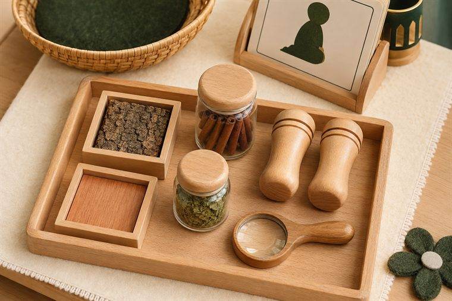
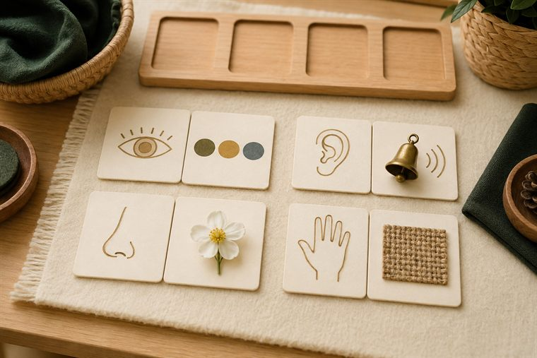
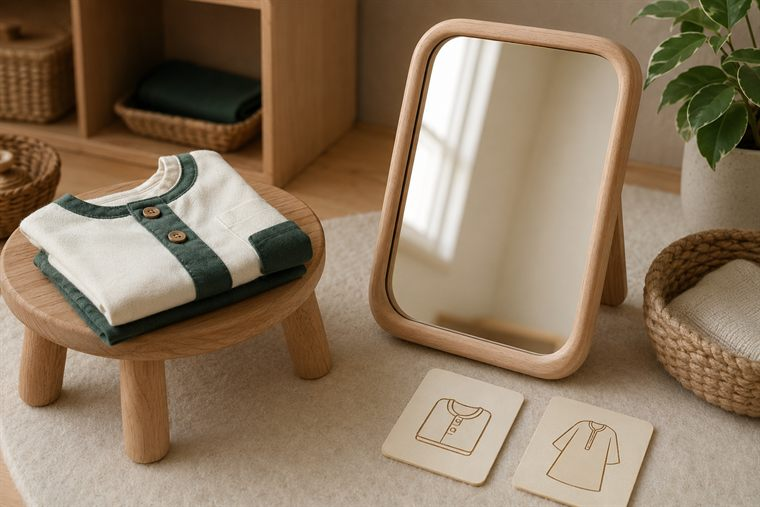
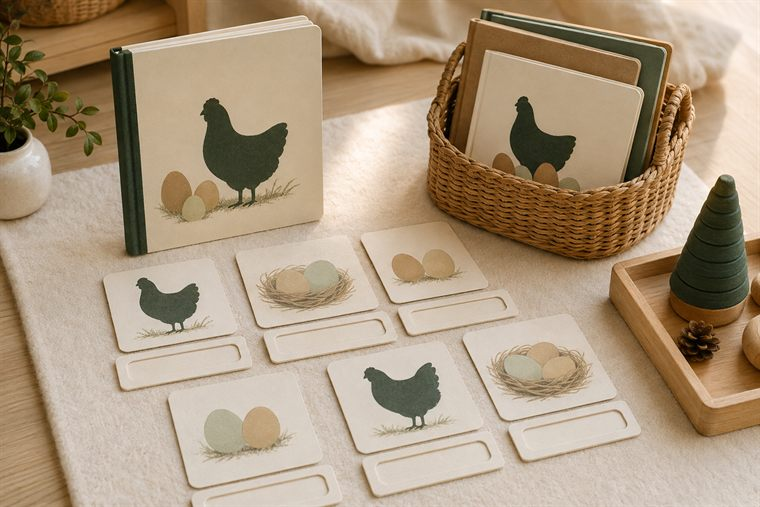

مساحاتُ لعبٍ حرّ بأدواتٍ تعليمية. لكثرة الأعداد نفتح ٤ أركانٍ متوازية بمراكز مختلفة؛ وزّعي المجموعات عليها وتتناوب بينها في الفترتين حتى لا تتكدّس. كل ركنٍ لمسةٌ تطبيقية خفيفة على فكرة اليوم. (أعمار ٥–٦: بناء/تلوين جاهز/قصّ ولصق/ترتيب/اختيار بطاقات/أدوار/حركة — بلا كتابة أو رسمٍ حرّ.)
دروس اليوم المتكاملة: كتابي المنير (الألفاظ المتكرّرة وأسماء الله) · علّمني ربي (مفاتيح التعلّم ١) · أحبّك ربّي (الرّبّ: أمدّني بالنِّعَم) · أدب واقتداء (دعاء الثوب الجديد) · قال رسولي (إذا سألت فاسأل الله) · قصّة لولوة والبيض.

🔎 أكتشف ما حولي · «حواسّي مفاتيحُ التعلّم»
يستكشفُ الطفل بحواسّه موادَّ آمنة: يلمسُ ملمسًا خشنًا وناعمًا، ويشمُّ عيّناتٍ عطرية آمنة، ويُصغي لأصواتِ علبٍ؛ ويشكرُ نعمةَ الحواسّ التي جعلها اللهُ مفاتيحَ للتعلّم.
🧰 الأدوات: صناديقُ ملمس · عيّناتٌ عطرية آمنة (قرفة · نعناع) · علبُ أصواتٍ · مكبّرات.
📋 دور المعلمة: توجّهُ الاستكشافَ وتنسبُ الحواسَّ للرّب المُنعِم: «مَن أعطاك عينًا وأذنًا؟».
🌱 المعنى المركزي: حواسّي مفاتيحُ التعلّم من الرّب؛ فأشكره وأستعملها في الخير.
📜 قوانين الركن: أبقى في ركني حتى ينتهي الوقت · أحافظ على أدواته · أتشارك وأنتظر دوري · أُعيد الأدوات مرتّبة.

🧩 أدرك وأستمتع · «أطابقُ الحاسّةَ بعملها»
يطابقُ الطفل بطاقةَ حاسّةٍ ببطاقةِ ما تُدرِكه (عينٌ ↔ ضوءٌ وألوان · أذنٌ ↔ أصوات · أنفٌ ↔ روائح · يدٌ ↔ ملمس)، لعبًا بلا كتابة.
🧰 الأدوات: بطاقاتُ مطابقةٍ جاهزة · لوحةُ ترتيبٍ مصوّرة · سِلالُ تصنيف.
📋 دور المعلمة: تنمذجُ مطابقةً ثم يستكشفُ الطفل؛ تحتفي بالمحاولةِ لا بالصوابِ فقط.
🌱 المعنى المركزي: كلُّ حاسّةٍ نعمةٌ لغرضٍ حكيم؛ سبحان مَن خلقها.
📜 قوانين الركن: أبقى في ركني حتى ينتهي الوقت · أحافظ على أدواته · أتشارك وأنتظر دوري · أُعيد الأدوات مرتّبة.

🏠 الإيهام · «أسألُ ربّي ويكسوني الجديد»
لعبُ أدوارٍ: يلبسُ الطفل ثوبًا «جديدًا» (لعبًا) ويقولُ دعاءَ الثوب الجديد، ويطلبُ حاجتَه من الله لعبًا؛ يتعلّمُ أنّ العطاءَ من الله وحده (إذا سألت فاسأل الله).
🧰 الأدوات: أثوابُ لعبٍ · مرآةٌ آمنة · بطاقاتُ دعاء الثوب المصوّرة.
📋 دور المعلمة: تُدير الأدوارَ وتذكّرُ أنّ العطاءَ والكسوةَ من الله وحده؛ تقودُ دعاءَ الثوب.
🌱 المعنى المركزي: أسألُ اللهَ وحده وأشكره على كسوته.
📜 قوانين الركن: أبقى في ركني حتى ينتهي الوقت · أحافظ على أدواته · أتشارك وأنتظر دوري · أُعيد الأدوات مرتّبة.

📚 أقرأ · «قصّةُ لولوة والبيض»
يتصفّحُ الطفل القصّةَ المصوّرة «لولوة والبيض» ويستخرجُ درسَها: سؤالُ الله والصبرُ على ما يُحبّ؛ فالعطاءُ من الله وحده.
🧰 الأدوات: قصّةُ لولوة والبيض المصوّرة · قصصُ نِعَمٍ · بطاقاتُ كلمة-صورة.
📋 دور المعلمة: تقصُّ الحكايةَ وتحاورُ عن سؤالِ الله والصبر؛ تحتفي بالإصغاء.
🌱 المعنى المركزي: أطلبُ من الله فهو الذي يعلّمُ ويرزق.
📜 قوانين الركن: أبقى في ركني حتى ينتهي الوقت · أحافظ على أدواته · أتشارك وأنتظر دوري · أُعيد الأدوات مرتّبة.
تفاصيلُ الأركان الستّة وروتينُها في تبويب «خريطة الأركان» أعلى الصفحة، ولكلِّ لقاءٍ ركنان تطبيقيّان داخل دليله.